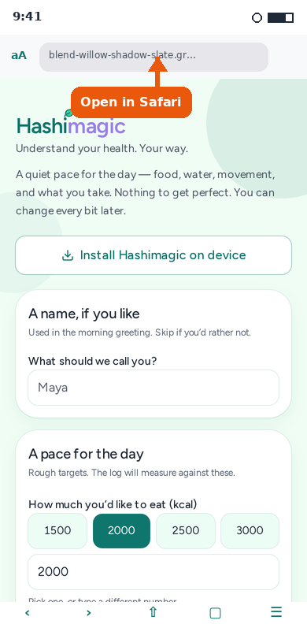
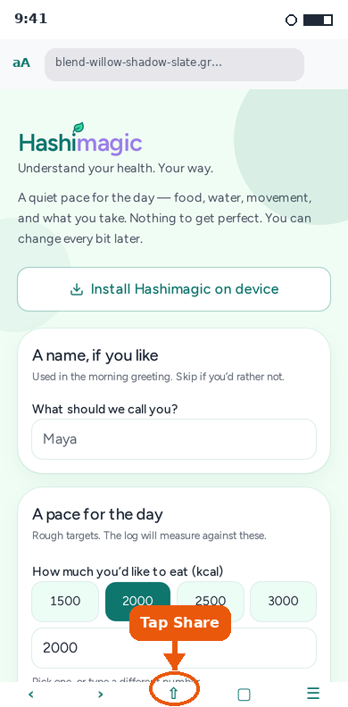
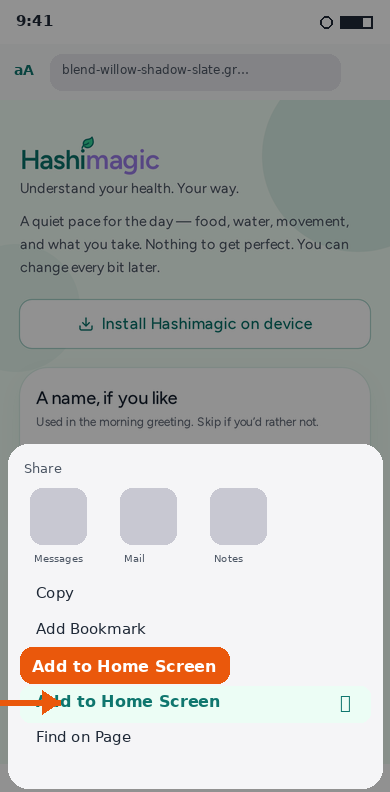
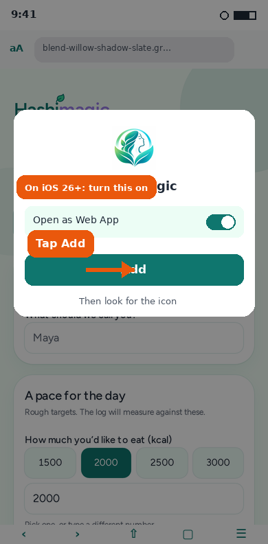
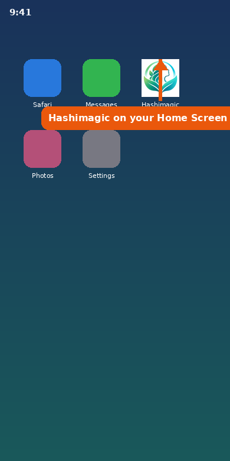

Add Hashimagic to your Home Screen
You need an iPhone on iOS 16.4 or later, and you must use Safari. Chrome and other browsers on iPhone cannot add Hashimagic to the Home Screen. The pictures below are illustrative guides to help you find each tap.
Open the link in Safari
On your iPhone, open Safari. Go to the Hashimagic beta link, or tap Open the app on the Hashimagic website. You should see the Hashimagic welcome screen.

Tap Share
Tap the Share button at the bottom of Safari (the square with an arrow pointing up). On newer iOS versions you can also open Share from the three dots beside the address bar, then choose Share.

Tap Add to Home Screen
In the Share sheet, scroll the list of actions if you need to, then tap Add to Home Screen.

Tap Add
Check the name says Hashimagic. On iOS 26 or later, turn on Open as Web App if you see that switch. Then tap Add. The Hashimagic icon appears on your Home Screen.

